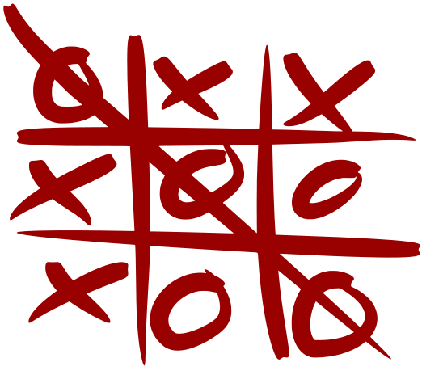
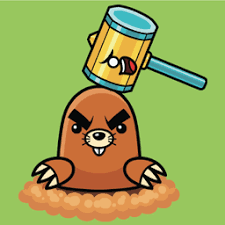
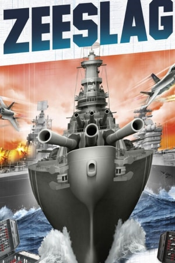

Boter kaas en eieren
2023 • BKE
Om de beurt plaats je jou symbool op een leeg veld. Als je drie van jou eigen tekens op een rij hebt heb je gewonnen.
Game creator

Whack a mole
2023 • WAM
Het doel is om zoveel mogelijk punten te scoren door snel reagerend de opkomende mollen te raken.
Game creator

Zeeslag
2023 • ZS
De enige echte Zeeslag normaal een 2 speler spel is getransformeert door Mertcan om samen te spelen met de computer voor deppresiefe en vriendeloos mensen zoals Mertcan zelf.